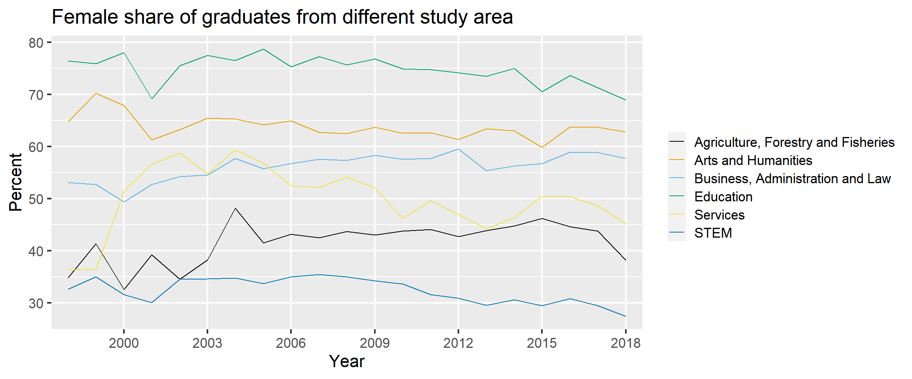
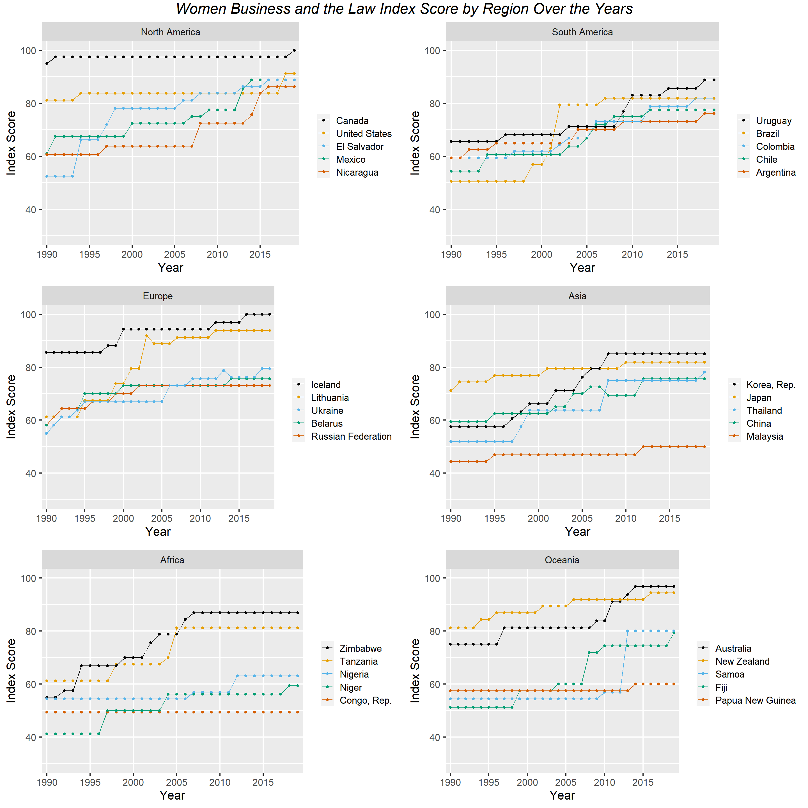
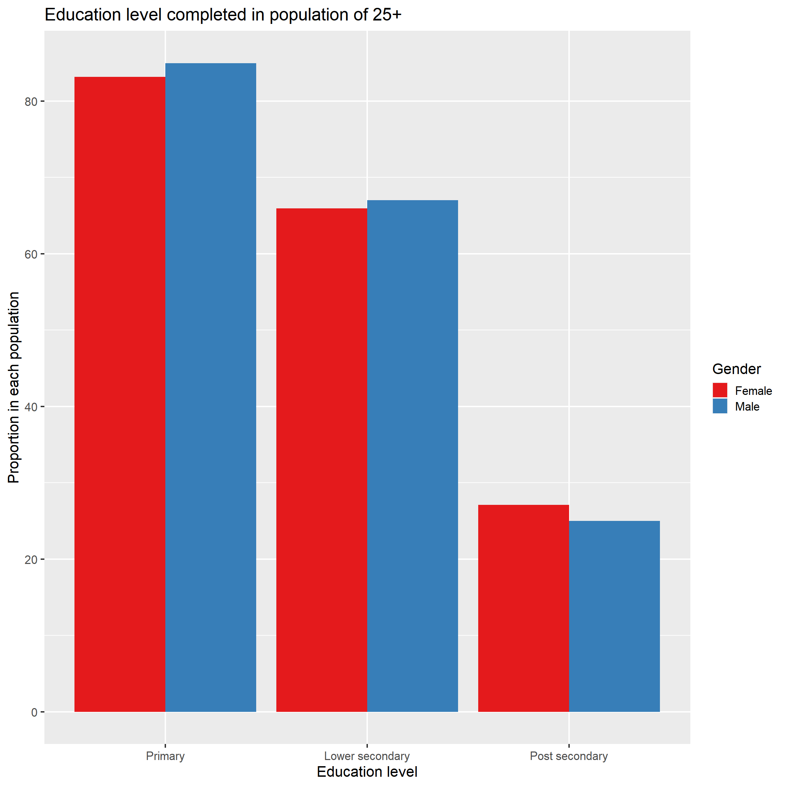
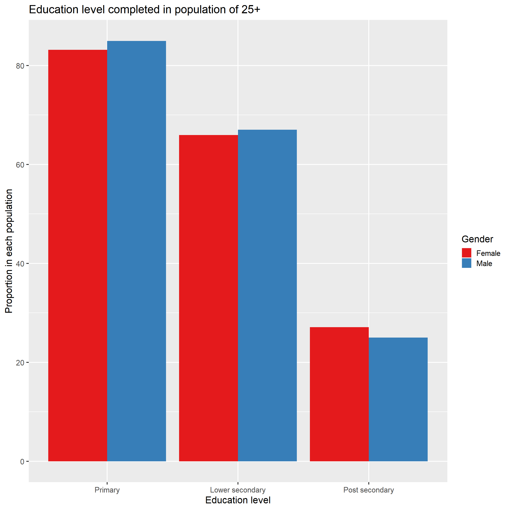
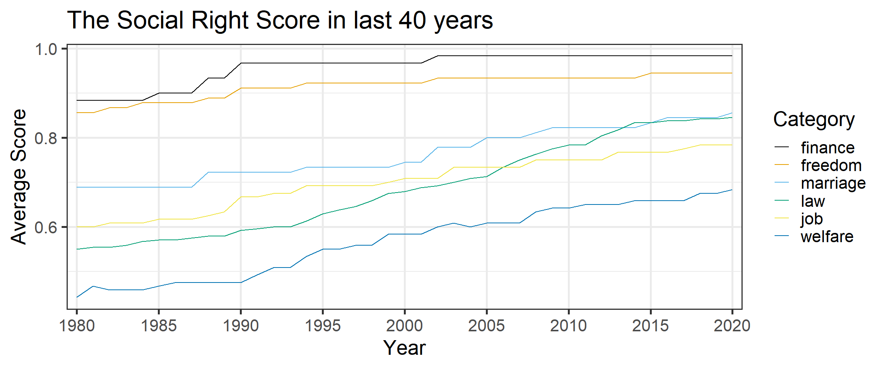

Chapter 5 Results
By exploring the gender data, we want to analyze the gender discrepancies to answer the following questions:
How do women’s social status compare to men’s social status in modern society from a variety of standpoints like social rights, education, and employment?
How has women’s social status changed in the last 30 years (years data is available for) regarding social rights, education, and employment?
What are the differences and developments in women’s social status between different countries in recent years? Does GDP (or other developmental / geographical factors) have an influence on equal rights. What are plausible explanations for gender discrepancies from the perspective of different countries?
5.2 Education

First, we want to focus on the difference between female and male in education status, thus using a bar plot is a good choice as it clearly shows the differences between these two groups in each category. This bar plot shows the proportion in female and male population over 25 years old based on education levels they at least complete. We divided the education levels into three categories: primary(grade 1-6), lower secondary(grade 7-12) and post secondary(all education after high school). In order to reduce the influences of missing values, We took the average of 30 countries in our sample during the recent 10 years. Thus this plot shows the overall education status in female and male population instead of focusing on a specific location or a specific year.
By observing the plot, the proportion decreases for both female and male population as the education level becomes higher. Over 80 percent female and male completed at least a primary level education, and over 60 percent of each population completed at least the lower secondary, while only less than 30 percent completed the post secondary education. This observation is consistent with our common sense: there will be less proportion of people in higher education.
Moreover, the data of female and male groups tend to have small difference in all three education levels. In the first two categories, primary and lower education, male population showed higher proportion of people completing this education level than female population, whereas in the last category, the plot showed there are higher proportion of female who graduated from a post secondary school than males. If we look at the scale of difference in the first two group, the difference in the lower secondary is smaller than the difference in primary. Thus, based on these two observations, we find that males tend to have more opportunities to take a basic level education than females. Also, among the population that completed the previous level of education, relative more females complete the next level education than males.

This line plot shows us how the percentage of female graduates in different study areas changed over the 20 years (1998 - 2018). The reason to not include the year 2019 and 2020 is because of the high number of missing values in these two years. As we can see, there are big differences between different majors. For example, there are always more than 70 percent of female graduates from Education and only about 30 percent of female graduates from STEM majors. The different study area also shows various trends. We see slightly decreasing trends in Education, Art & Humanities and STEM majors, and overall increasing in Business & Law and Agriculture & Forest. The percentage of female graduates in Services increased a lot before 2005 and later decreased in recent years, but overall, it still shows an increasing trend. Based on the plot, there seems to still have some gender differences among the various subject areas.
In this plot, we mainly focused on the factors related to women social status. The above parallel coordinates plot shows the relation between 6 parameters by using the data from 30 countries, 5 in each continent, after taking average of recent 25 years. These parameters are continent, GDP, fertility rate, government expenditure on education (% of GDP), female rural population (percentage) and expected schooling year for female.
Here are some observations from this plot:
There are big differences in GDP even with countries in the same continent. However, in our sample, North America and Asia have relative higher GDP, whereas Africa and Oceania have relative lower values.
There is a clear inverse relationship between GDP and fertility rate: Countries with higher GDP have lower fertility rate. All 5 sample countries from Africa get high fertility rates (approximately 4.5 to 7.3). Oceania is the continent with second highest fertility rate. Asia and Europe have low fertility rate for below 2.
Fertility rate and government expenditure on education are negatively correlated.
Government expenditure on education is negatively correlated with female rural population.
Female rural population and female expected year of schooling has inverse relationship.
From these observations, we can identify there is a correlation between these variables. Women education status is correlated with geography, national wealth, fertility rate, rural population and government expenditure on education. For countries with higher income, the education expenditure is also likely to be higher as the data is percentage based on the total GDP. For countries with relative low GDP, especially in Africa, the fertility rates and rural population are both tend to be higher. In this case, the education resources are limited by both the economic factor and the children population. Moreover, women with higher educational level are likely to delay the age of getting marriage and giving birth, this can also explained by the correlation between low fertility rate and high expected female school year.
5.3 Employment

The figure above for the average employment ratio by sex between 2010-2019 is ordered in descending order by male employment ratio. The purpose of this ordering is to list countries with high male employment ratios first and visualize whether or not the female employment ratios match up. Out of the 30 countries selected for the study, it is very telling that a lower female employment ratio fairly universal. The actual differences between male/female employment ratio varies drastically by country. From the figure above, it is clear that the issue is much more pronounced in countries like Samoa, Mexico, and Malaysia (among others) as opposed to countries like Canada, Congo, Rep., and Iceland. Whether or not the differences between the ratio of male/female employment varies by continent is explored in another figure below.
 The figure above for the average proportion of upper/middle management by sex is ordered in descending order by male upper/middle managers. The purpose of this ordering is to list countries with the biggest discrepancy in male/female manager ratio first, which can serve as a signal for gender discrepancies in employment opportunities. The countries on the figure without data points are countries where there is no data related to this area. These missing countries were kept within the figure to signify the fact that the International Labor Organization was unable to obtain any data related to this issue from numerous countries over a 10-year span. Even without 12 of the 30 randomly selected nations from the study, there appears to be a trend that people in upper/middle management are male the vast majority of the time in almost all countries with the exception of Nicaragua (in the sample). An interesting note is that although Papua New Guinea has a near equal proportion of female employment to male employment, upper/middle managers in that country are over 75% male. On the other hand, Nicaragua has a much higher male employment ratio than female employment ratio, but most upper/middle managers are female.

The Women, Business and the Law Score is an index that analyzes laws and regulations that affect women’s economic inclusion in 190 economies. It is composed of eight indicators revolving around women’s interactions with the law as they progress through their careers and make economic decisions. The eight indicators are: mobility, workplace, pay, marriage, parenthood, entrepreneurship, assets, and pension. The index ranges from 1-100 with 100 being the highest score, or equal legal rights with men in measured areas.
The figure above for the average proportion of upper/middle management by sex is ordered in descending order by male upper/middle managers. The purpose of this ordering is to list countries with the biggest discrepancy in male/female manager ratio first, which can serve as a signal for gender discrepancies in employment opportunities. The countries on the figure without data points are countries where there is no data related to this area. These missing countries were kept within the figure to signify the fact that the International Labor Organization was unable to obtain any data related to this issue from numerous countries over a 10-year span. Even without 12 of the 30 randomly selected nations from the study, there appears to be a trend that people in upper/middle management are male the vast majority of the time in almost all countries with the exception of Nicaragua (in the sample). An interesting note is that although Papua New Guinea has a near equal proportion of female employment to male employment, upper/middle managers in that country are over 75% male. On the other hand, Nicaragua has a much higher male employment ratio than female employment ratio, but most upper/middle managers are female.

The Women, Business and the Law Score is an index that analyzes laws and regulations that affect women’s economic inclusion in 190 economies. It is composed of eight indicators revolving around women’s interactions with the law as they progress through their careers and make economic decisions. The eight indicators are: mobility, workplace, pay, marriage, parenthood, entrepreneurship, assets, and pension. The index ranges from 1-100 with 100 being the highest score, or equal legal rights with men in measured areas.
The figure above displays the Women, Business and the Law index scores over a 30-year period faceted by continent with 5 countries per continent. The figure indicates a universal trend upwards in the index score over nearly all countries in every continent, although the degree of improvement varies drastically. For example, countries like the Congo, Rep. saw no improvement since 1900 and Papua New Guinea saw very marginal improvements, whereas countries like Brazil and Lithuania saw drastic improvements over the same time frame. It is very uncommon for the index score to go downwards once it has gone up, although it has happened on occasions like in 2004 for Lithuania, 2014 in Ukraine, and 2008 in China. A significant marker for gender inequality in employment is that only 2 of the 30 selected countries ever achieved a score of 100, signifying equal legal rights with men in the measured areas of the index. Although women’s legal rights in the eight indicator areas have improved worldwide since 1990, there are very few countries where equality is achieved as of now.
The figure above displays the ratio of female to male employment ratio vs. GDP on a log scale for each country color coded by continent. There appears to no correlation overall between a country’s female/male labor force participation rate to the country’s GDP as the data points are scattered throughout as opposed to group along a linear line. However, when looking at individual continents separately, female/male labor force participation rate does seem correlated with GDP in continents like Europe, Africa, and North America (trend is not really observable for Asia, Oceania, and South America). This suggests that the correlation between female/male employment ratio may have a lot to do with geographical location of the country, and depending on the location, the ratio may be correlated with GDP.
5.1 Social
To discuss the social rights for women in the world these years.
To explore the details about the social rights, the heatmap is a good choice. The y axis is ordered by the average scores of countries from high to low. The x axis is ordered by the average scores of the topics.
We can see that Iceland, Canada and New Zealand actually both achieved a score of 1 in 6 topics, meaning that there are no gender discrimination in the social rights aspect in these three countries. Compared to that, Niger has no score of 1 in every topic, meaning there is still some significant gender discrepancies there, especially for marriage where the score is close to 0. This means men have more power to dominate the marriage in Niger. Another point worth paying attention to is that jobs also have a very low score in Ukraine while other scores are quite high, meaning that women face more significant gender discrimination in the workplace as opposed to other social aspects there.
Moreover, there are some countries have really similar social rights conditions for women. For example, Canada and Iceland and New Zealand, United States and Mexico, Nicaragua and Lithuania, Zimbabwe and El Salvador, Fiji and Colombia, China and Belarus, Russian Federation and Papua New Guinea. We will discuss what kinds of factor contributes to the distribution of the scores like this.
Generally, women tend to have the same rights as the men in the finance aspect since only 1 country did not achieve 1 in finance. For the freedom part, only 4 countries did not achieve 1, meaning that the majority of the countries do not keep women from doing something which men can do. However, in terms of the social welfare, the women tend to have a worse welfare guaranteed compared to men in these years with only 5 countries achieving score 1. As for law, marriage and job, different countries have a wide variety of different conditions.
Since the heatmap do not show the detailed score distribution of topics clearly. We can explore the general distribution more carefully by looking at the bar charts. We can see that for the finance part ad freedom part, the majorities of countries has a score of 1. For the job aspect, we can see that except for the score 1 and the outlier laying between 0.2 to 0.3, there are two clusters of countries distributed in the range of 0.4-0.5 and 0.7-0.8, meaning there is a gap (0.5-0.7) between the countries for the women social status in the job aspect. For law, we can see the range of the clusters are nested in the right corner except the outlier laying between 0.3 to 0.4, meaning the general scores are high in the law aspect and the difference of the condition are small between the countries. For marriage, only 3 countries are outliers, and the majority countries are landed in score 1 with approximately 7 countries having 0.6-0.7 scores. For welfare, we can see there are mainly 3 clusters, for 0.4-0.5, 0.7-0.8, 0.9-1.0 respectively. And nearly halves are in 0.4-0.5 and another halves are in 0.7-0.8. It shows that the general condition in the world is that the women have worse welfare compared to men. And there is a treatment gap (0.5-0.7) between the countries in two clusters.

The labels are ordered according to the average score of 30 countries in the 2020.
We can see the general trend of the women social rights in different topics from the curve plot. In the recent 40 years, the general trend for the women rights is increasing for every topic. And the increase started formally at around 1987-1990 for every topic. The law curve grew most rapidly from around 0.56 to 0.86, exceeding the score of job in 2020. Although the welfare score was low at the beginning, it also grew very rapidly from around 0.45 to 0.68. The growth pattern of the finance and freedom are similar, so we hypothesize that they are somehow correlated. Job and marriage seems to follow a similar trend to finance and freedom. Therefore, the gender discrimination problem is disappearing and it is most obvious in the welfare and law aspects.
Since we have more variations in score for job, welfare, marriage and law aspects. We will only explore what potential factors influenced these variations.
Also, since some countries’ GDP are extremely high, making other countries’ GDP hard to see in the parallel coordinates, We used the log to scale the GDP, which will not influence the absolute rank of the GDP.
We can drag the GDP or Continent coordinates to see the correlation between the GDP or Continent and other factors we are interested in. And also we can select the range of the coordinates from top to bottom to see how the gender discrimination condition will vary when the GDP is high or the Continent is specified.
The key findings in this part is following:
1.There is no obvious evidence that GDP will influence the gender discrimination in the social rights aspect.
Countries in North America will have a higher score in job while the countries in Asia will have a lower score in job. Other continents have various scores, showing no obvious trend.
Countries in South America and Asia will have a lower score in law while the countries in North America will have a higher score in law. Other continents have various scores, showing no obvious trend.
Countries in North America, Europe and Oceania will have a higher score in marriage. Other continents have various scores, showing no obvious trend.
Countries in Africa will have a lower score in welfare. Other continents have various scores, showing no obvious trend.
It is quite surprised that the GDP has no influence on the gender discrimination in the social rights aspect but the geographic position will influence it. Maybe the cultural reasons instead of the financial reasons will dominate the gender discrimination problem more. It quite makes sense. Although in these years we focus on solving the discrimination, it is quite hard to wipe it out since the cultural stereotypes will give us a preconception about the gender and then influence our action and decisions subconsciously.